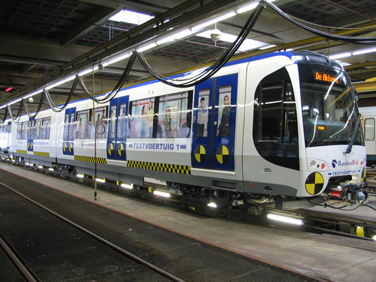
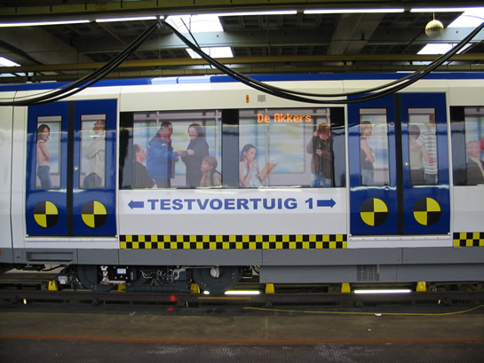
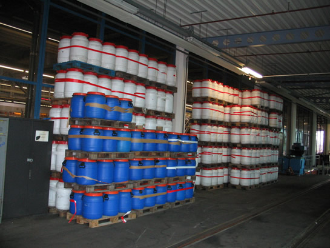
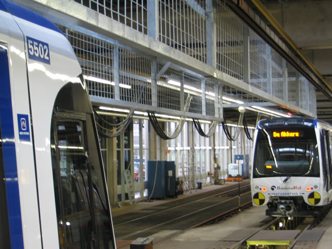
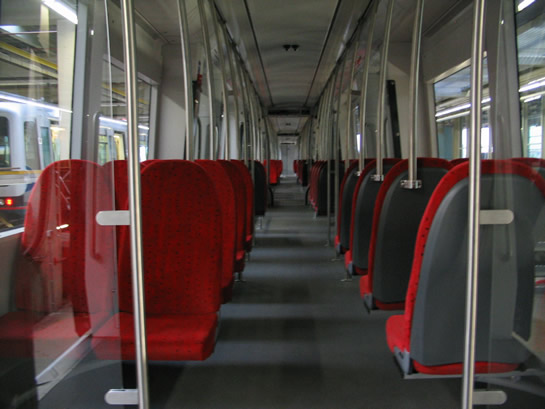
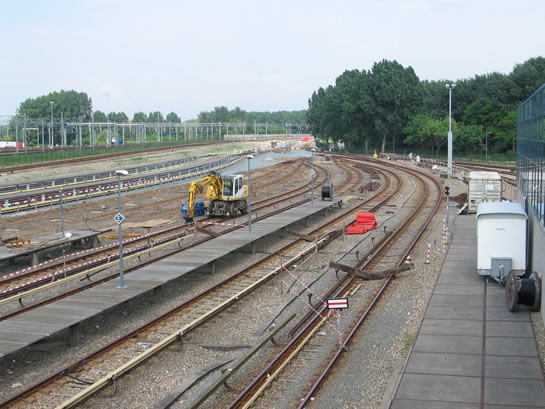
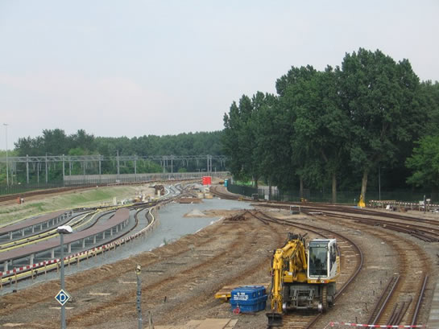

Testvoertuig 1 maakt eerste proefritten en meer...
- zondag 30 november 2008 21:52
- Geschreven door Joachim
Vorige week maakte rijtuig 5501 de eerste proefritten op het emplacement 's-Gravenweg. Omdat de ATB-installatie nog niet volledig in bedrijf is, mag het metrotreinstel het emplacement nog niet verlaten. Wanneer alles naar wens verloopt, worden deze week de eerste nachtelijke proefritten op de hoofdbaan gemaakt. Rijtuig 5501 is voorzien van een bijzondere uitmonstering. Alle ruiten zijn beplakt met foto's van reizigers en RET-medewerkers, daarnaast zijn er symbolen op het rijtuig aangebracht die gebruikt worden bij autobotsproeven. Op de voor- en zijkanten is de tekst "Testvoertuig 1" aangebracht.

Rijtuig 5501, gefilmd "De Akkers" als wagendienst 708, op spoor 323 van de remise 's-Gravenweg.

Botsproeven of niet: ludiek is de bestickering wel.

Deze vaten worden gevuld met water om het gewicht van reizigers te simuleren. Op die manier kan het rij- en remgedrag van de nieuwe rijtuigen geanalyseerd worden.
Rijtuig 5502
In de nacht van donderdag 15 op vrijdag 16 mei werd rijtuig 5502 overgebracht naar Rotterdam. Op vrijdagmorgen is het rijtuig omstreeks 7.00 uur aangekomen bij de lijnwerkplaats Waalhaven. In een eerder stadium onderging dit rijtuig enkele proeven in de klimaatkamer in Wenen. In de nacht van vrijdag op zaterdag werd het metrorijtuig al overgebracht naar de remise 's-Gravenweg. Het rijtuig zal samen met de 5501 ingezet worden bij diverse proefnemingen. Het metrorijtuig is reeds voorzien van een interieur en zal hoogstwaarschijnlijk dezelfde bijzondere bestickering krijgen als rijtuig 5501.

Rijtuig 5502, voorzien van rijtuignummers en logo's, op spoor 323 tegenover rijtuig 5501.

Het interieur van rijtuig 5502 met de bloedrode gestoffeerde bankjes.
Midlife-revisie serie 5300
Metrorijtuig 5333 is na een uitgebreide technische revisie, die uitgevoerd werd in de Centrale Werkplaats Kleiweg, vanavond weer teruggekeerd aan de lijnwerkplaats Waalhaven. Het volgende rijtuig dat voor een revisie in aanmerking komt is rijtuig 5331, dat vanmiddag per spoor afgeleverd werd op het terrein van de Centrale Werkplaats Kleiweg. Eerder kreeg rijtuig 5301 een dergelijke revisie.
Werkzaamheden emplacement Waalhaven
De verlenging van de opstelsporen op het emplacement Waalhaven gaat gestaag door. Momenteel wordt gewerkt aan de sporen 125 t/m 130. Hierdoor kunnen deze sporen alleen vanaf de westzijde benaderd worden.

De sporen 125 t/m 130 zijn slechts voor de helft beschikbaar voor het metroverkeer.

De sporen 125 tot en met 127 zijn deels opgebroken, hiervoor komen nieuwe sporen in de plaats.